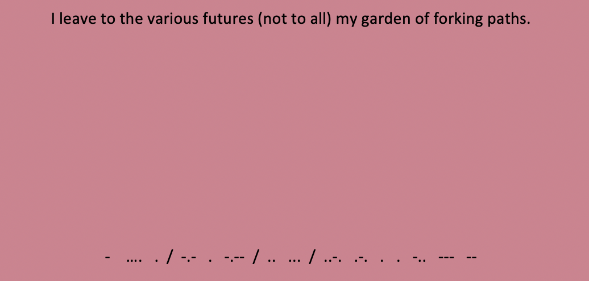

Inside, the man introduces himself as Albert. He then goes on to explain the garden of forking paths, the garden of your ancestor Ts'ui Pên. Suddenly, Albert rose. He turned his back on me for a moment; he opened a drawer of the black and gold desk. He faced me and in his hands he held a sheet of paper that had once been crimson, but was now pink and tenuous and cross-sectioned. The fame of Ts’ui Pén as a calligrapher had been justly won. I read, uncomprehendingly and with fervor, these words written with a minute brush by a man of my blood:
 Next